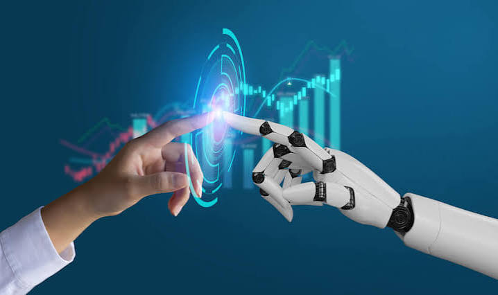
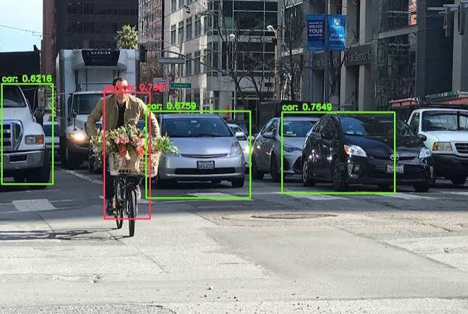
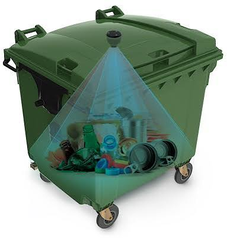
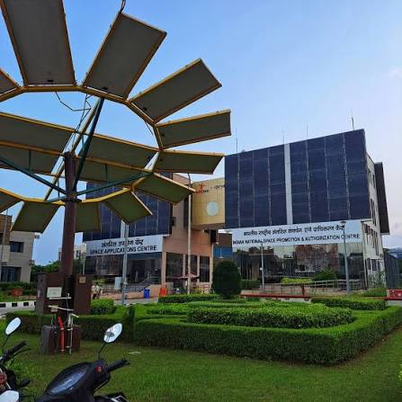
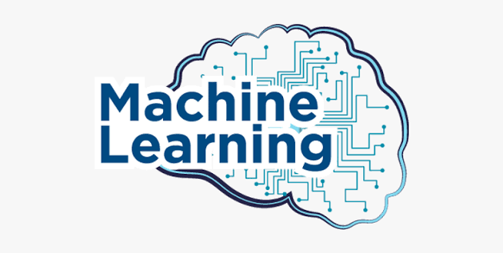
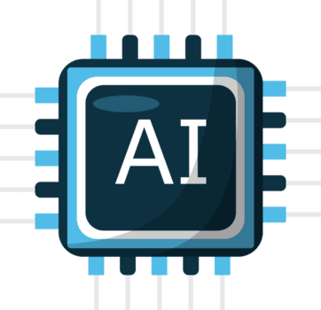

My career journey began with a strong interest in technology and problem-solving during my undergraduate studies in Computer Engineering at CHARUSAT. Throughout my bachelor’s degree, I explored different areas of computer science, but I became particularly interested in how software, artificial intelligence, and connected systems can be applied to solve real-world problems.
Research and first projects


During my undergraduate studies, I gained hands-on experience through academic projects, research, and internships. My research work introduced me to machine learning and computer vision, including work with hyperspectral images for plant disease detection and classification. This experience helped me understand the research process and strengthened my interest in applying AI to practical problems.
I also worked on an IoT-based waste-bin monitoring system using Raspberry Pi, sensors, and cloud-based analytics. This project resulted in a research publication and gave me experience designing a complete technology solution — from collecting data through physical sensors to transmitting and analyzing that data through the cloud. I later worked on real-time object detection and recognition using YOLOv8 and NVIDIA Jetson Nano, which further developed my interest in computer vision and machine learning.
ISRO — Space Applications Centre

One of the most valuable experiences in my undergraduate career was my internship at ISRO’s Space Applications Centre. My project focused on radiometric balancing of high-resolution mosaic images using the SNAP environment. Working with satellite imagery exposed me to a professional research environment and showed me how computer science and data processing can contribute to applications in remote sensing and space technology. It also taught me the importance of experimentation, documentation, and solving technical problems systematically.
Graduate study at Northeastern
These experiences made me realize that I wanted to develop a deeper foundation in computer science while expanding my software engineering skills. I therefore chose to pursue a Master of Science in Computer Science at Northeastern University. My graduate studies have allowed me to work across areas including artificial intelligence, computer vision, algorithms, programming, and web development. Through coursework and projects, I have been strengthening not only my theoretical understanding but also my ability to build and implement practical software solutions.
Where I am headed


At this stage of my career, I am focused on bringing together the different parts of my background. My research experience has given me curiosity and an analytical mindset, while my projects and coursework have helped me develop practical programming and software-development skills. I am particularly interested in opportunities where I can work with Python, machine learning, computer vision, data, and software engineering to build useful and scalable solutions.
My next goal is to gain industry experience through a co-op opportunity and transition into a full-time role where I can continue learning while contributing to meaningful technical projects. In the long term, I want to build a career at the intersection of software engineering and AI, using the combination of my research background, graduate education, and practical engineering experience to solve complex real-world problems.